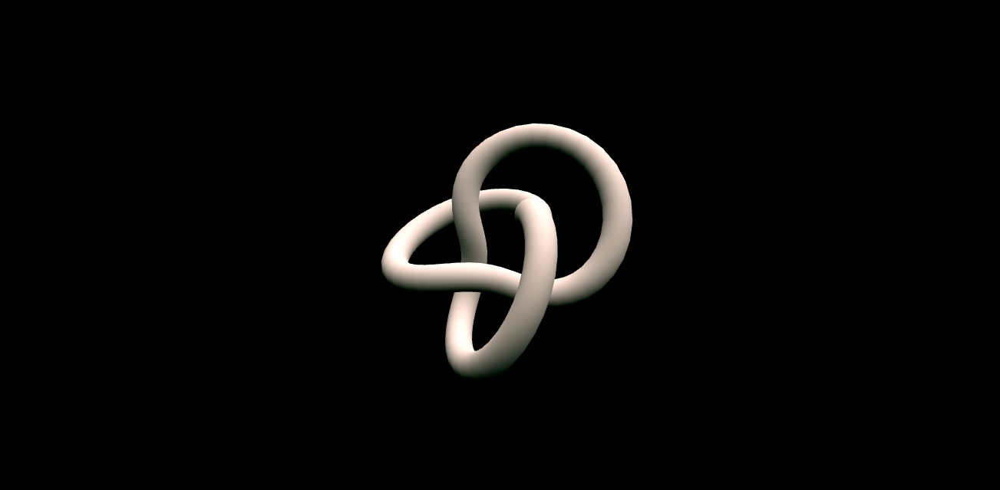
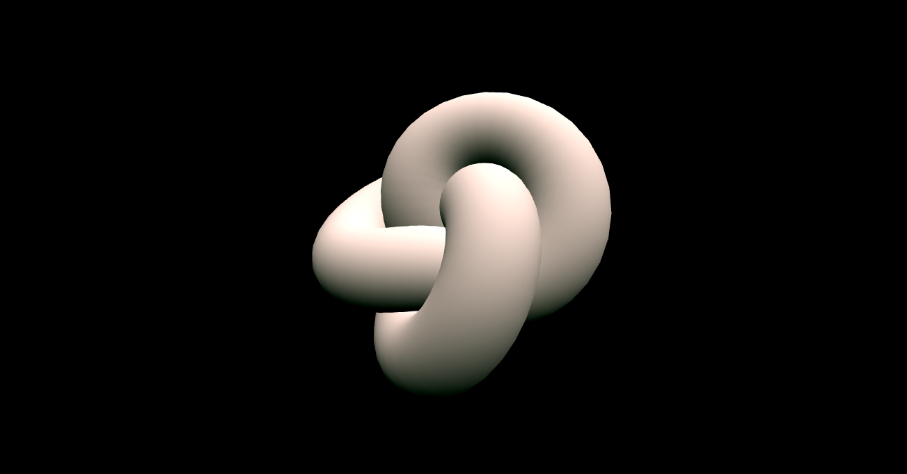
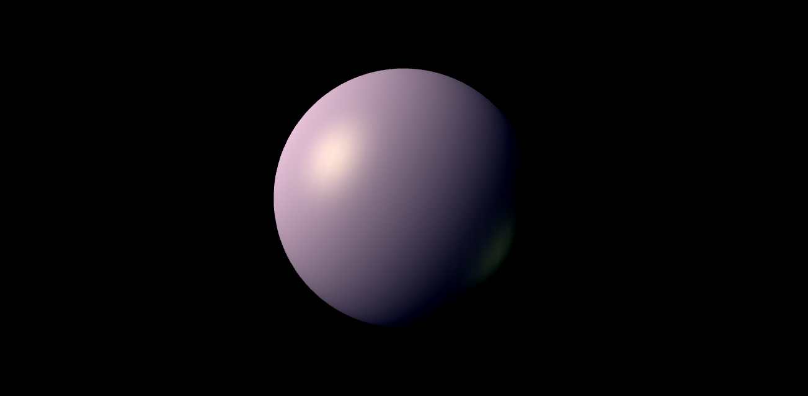
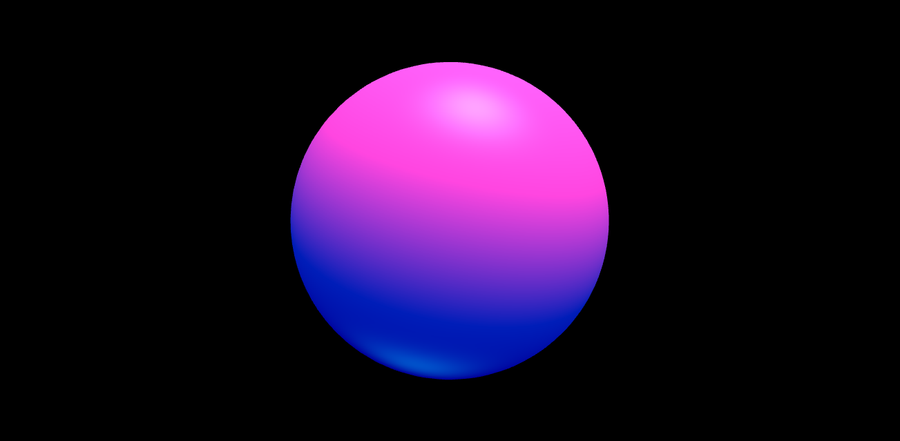
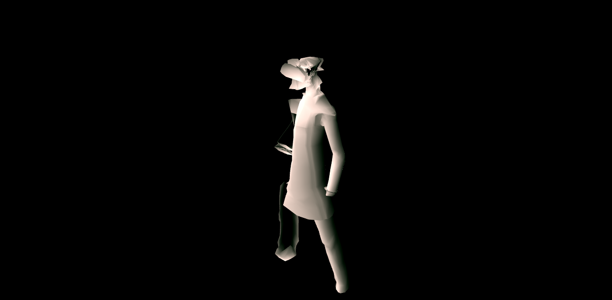
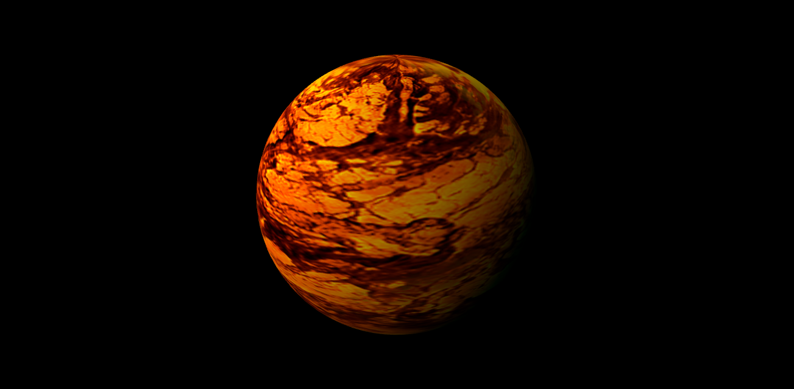
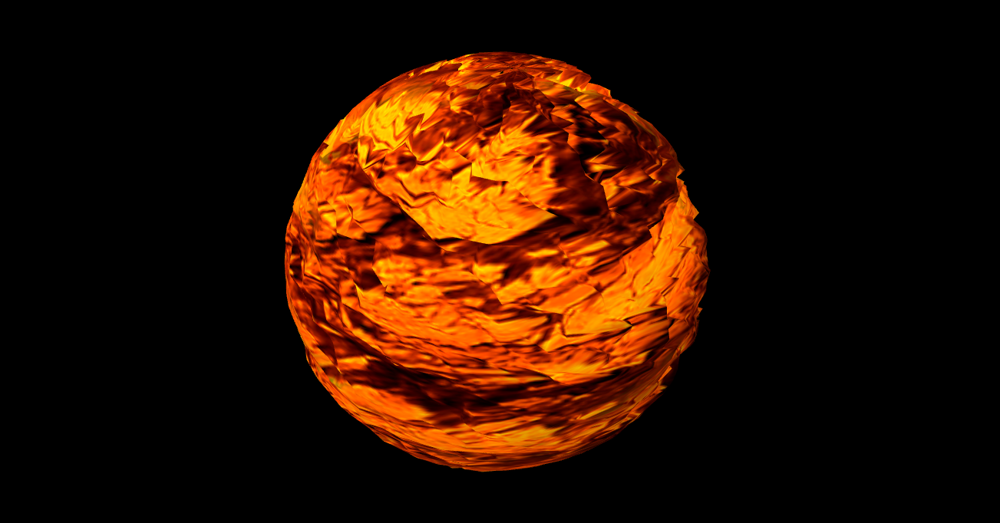
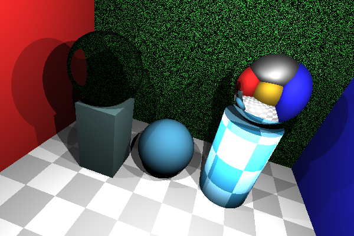
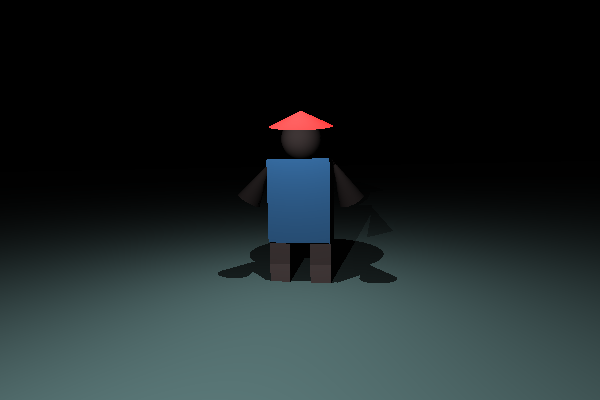

COS426 Assignment 3Rendering — Writeup
- (0,5) Inflate
- (1.0) Gouraud shader
- (1.0) Phong shader
- (1.0) Wacky
- (0.5) Texture
- (1.0) Bump mapping
- (2.0) Sphere
- (2.0) Box
- (2.0) Cylinder
- (3.0) Cone
- (1.0) Shadows
- (2.0) Transmission
- (1.0) Checkerboard
- (1.0) Other
- (1.0) Scene
- (1.0) Art
Inflate
Inflate moves each vertex along its normal by the inflated factor.
Here it is deflated at -.5.

Here it is inflated at .5.

Gouraud shader
I did Gouraud after Phong, using most of the same code except setting vColor to the Phong value computed rather than changing the phong value to a vec4 and factoring in (like in Phong). The main difference is that the lighting is per-vertex, rather than per-pixel.
So shiny, wow!

Phong shader
Phong shading adds the diffuse, specular, and ambient values to each pixel.
So shiny, wow!

Wacky
Perhaps not the most aesthetic or artistic wacky, but I made a new shader and played around with mods. Here's the man using inflate slider to adjust level. At inflate = 0, wacky stays the same, so it needs a parameter to do its magic.

Check it.
Texture
Use the UV vector and the texture2D vec4 to multiply the current color by the texture.

Check it.
{kind=link}
Bump mapping
The normal is modified by a factor that depends on the mapped texture at that point.

Check it.
{kind=link}
Sphere
Using the algebraic method described in the lecture notes, I implemented sphere. I had issues with the appropriate texture mapping, however; Huiwen helped me with debugging and I realized that I hadn't been checking for the case where the determinant (when solving quadratic equation) is negative.

Check it.
Box
I checked for intersections in each of the six planes of the box for an intersection, then chose the minimum intersection. Because the box is axis aligned, the normal could either be along the x, y, or z axis.
Check it.
Cylinder
I relied quite heavily on Precept 9 notes here and its subsequent equations. Small road bump while writing discs; instead of using the dot product as the distance in checking for the planes, I used distance(center, vec3(EPS, EPS, EPS)). It's fixed now, though.
Check it.
Cone
Cone wasn't too difficult after following precept notes! I had a small error in calculating the angle, but figured it out by using length().

Check it.
Shadows
For hard shadows, I just moved towards the light source and checked if there was an object in the way. If not, it's not in the shadow.
Check it.
Transmission
Originally, the reflectance wasn't working, but I checked Piazza and replaced my 1/eta by eta and multiplied instead of divided (typo in the original comments). I just used Snell's law.
Check it.
Checkerboard
Modded by a value for reasonably-sized checkers. If it's even, the color is lightened. If odd, then darkened.
Check it.
Other
I kind of used the pseudo-randomness mentioned in Precept so that each color is manipulated by a random factor determined by position. Now, the background is green and speckled and noisy.
Check it.
Scene
Look! It's a cute guy with a hat!
Check it.
Art
Look! It's a cute guy with a hat!
Check it.